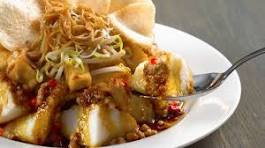

Ketoprak is a traditional Indonesian dish that uses ketupat as its main ingredient. It's typically sold from pushcarts on the streets or by street vendors . This specialty is commonly found in the Greater Jakarta area and Cirebon City , West Java .
This one is my favorite dish if I am hungry in the night.
Below is the ingredient and steps to make delicious ketoprak:
Step 1: Prepare the peanut sauce
Grind or blend roasted peanuts, garlic, chilies, tamarind paste, sugar, and salt until smooth. Gradually add warm water and mix until you get a thick but pourable sauce.Step 2: Prepare the toppings
Soak the rice vermicelli in hot water until soft, then drain. Blanch the bean sprouts briefly in boiling water. Slice the tofu, rice cake, and cucumber as needed.Step 3: Assemble the Ketoprak
In a serving plate or bowl, place rice vermicelli, tofu, bean sprouts, rice cake slices (if using), and cucumber.Step 4: Add sauce and toppings
Pour the peanut sauce generously over the top. Drizzle with sweet soy sauce. Sprinkle with fried shallots and serve with crackers on the side.